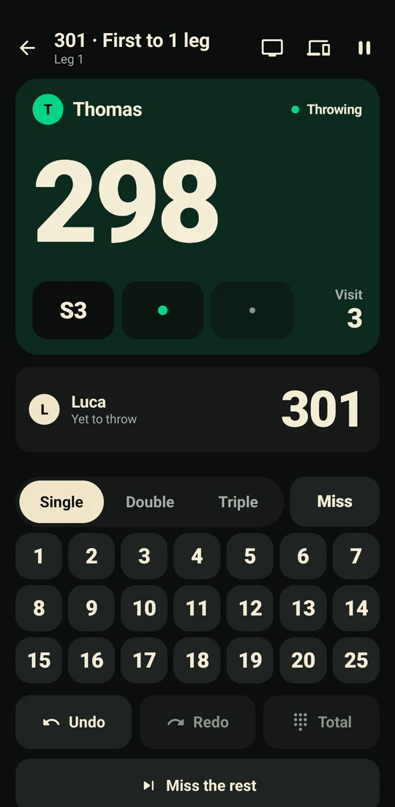
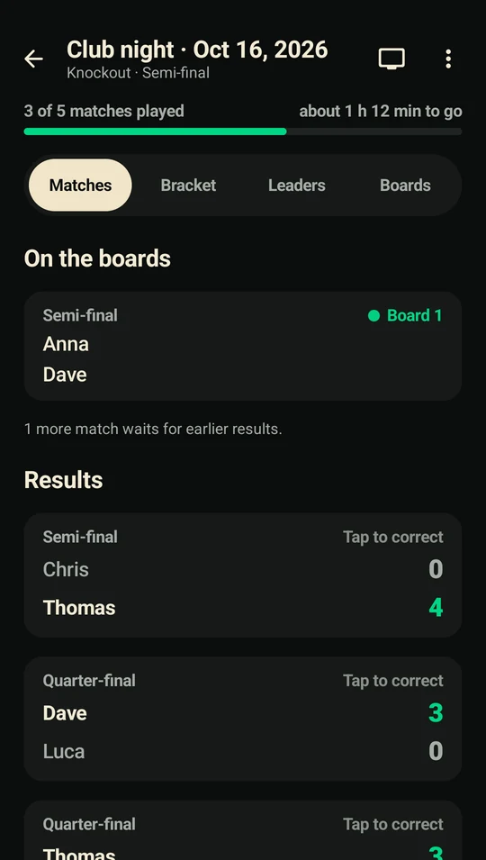
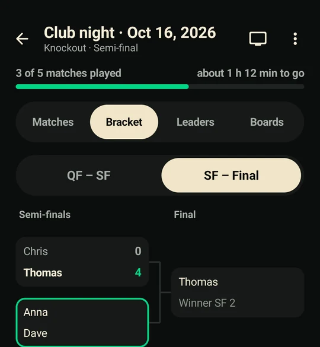
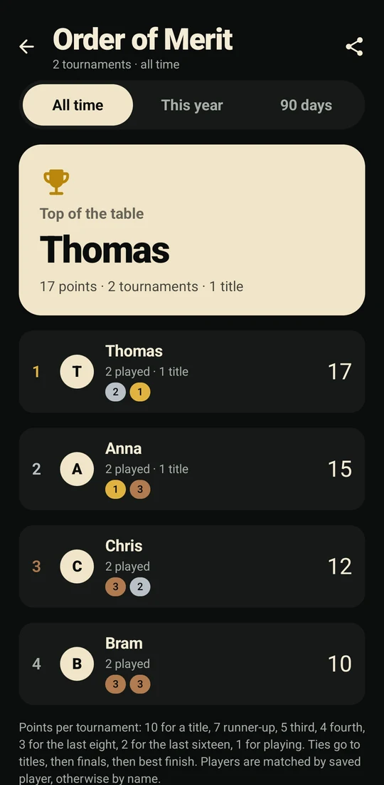
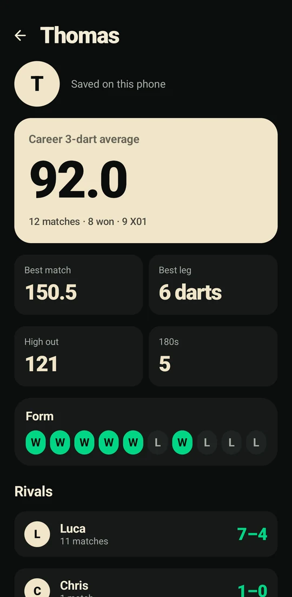
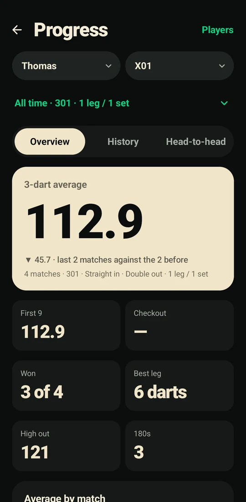
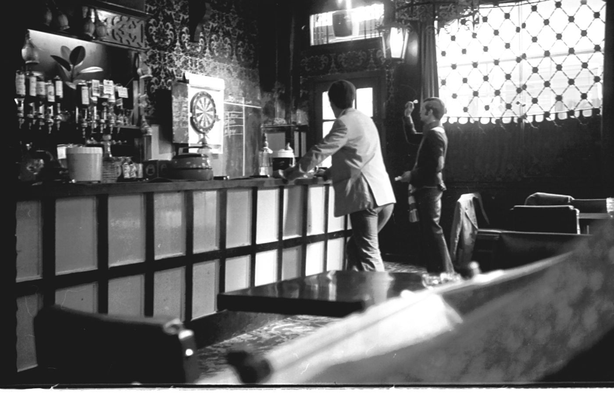
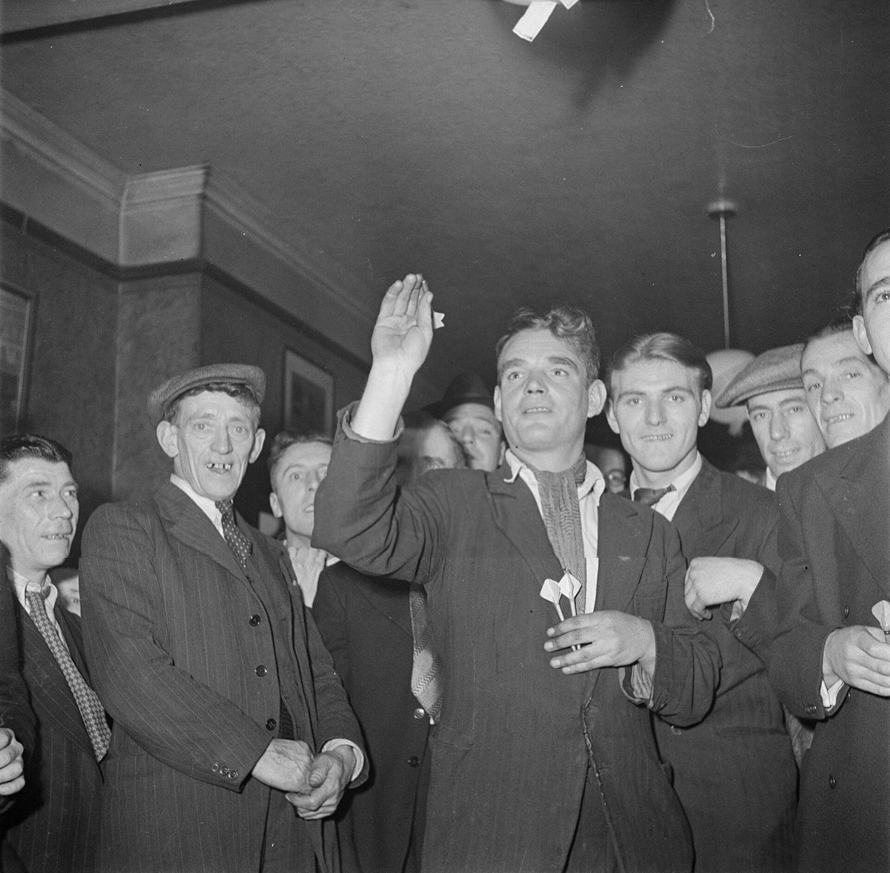
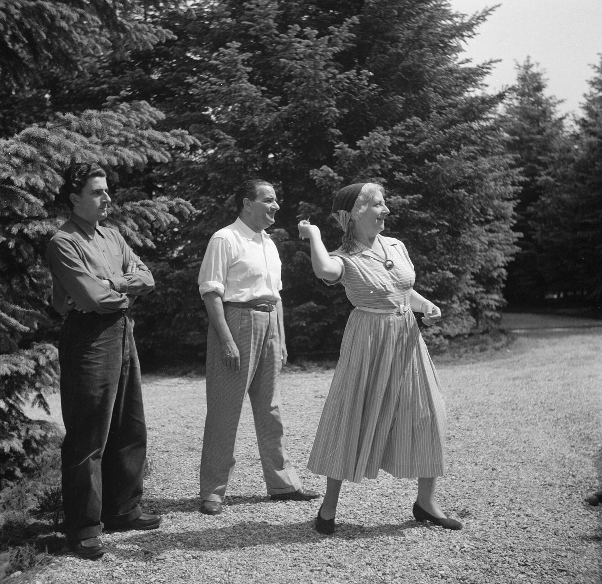
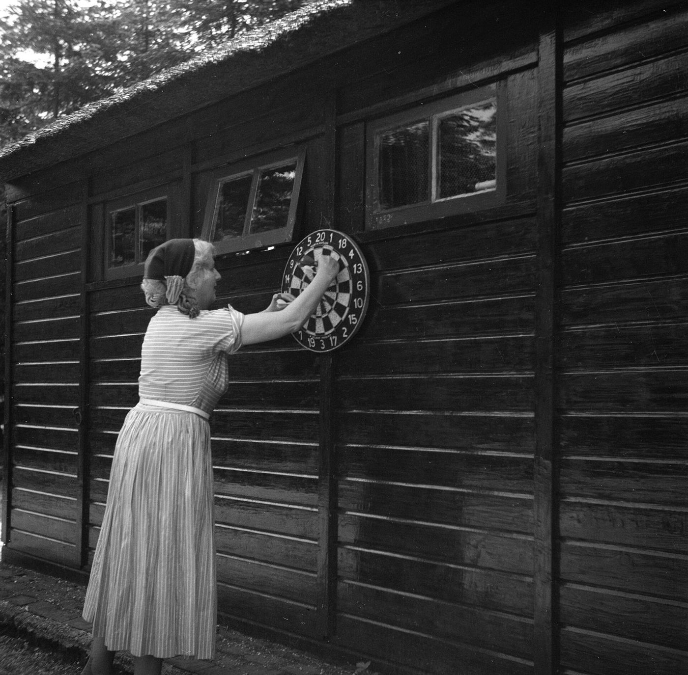

Darts, countedby your phone.
Prop a phone by the board and throw. Still Point sees every dart, keeps the score, calls the checkout and puts the whole night on the pub TV.
For Android, in testing. No account, no internet, no extra hardware.One phone, the whole evening.
The scoreboard, the tournament, the club's ranking and every player's numbers live on the phone that films the board. These are its real screens.






The scoreboard
Every dart lands in its box as the camera sees it, with the finish beside the score. One tap corrects a dart; the keypad is there when you would rather type.
The pub TV, live.
Open one address on the TV, a projector or a Chromecast. The room sees the scores, this visit's darts on a board, the checkout and who took each leg. Between matches it calls the next one to its board, shows the bracket and crowns the champion.

The slate did the sums.
For a century someone stood by the board and chalked the score backwards from 501. Still Point keeps the game as it is: the oche, three darts, the double to finish, the walk to pull them out. It only does the counting, and it remembers.

In every pocket.
The TV shows a code. Anyone in the room scans it and has the night on their own phone: the scores as they land, the bracket, the table. Pick a name and it says where they stand, and buzzes when they are called to a board.
No app and no account for the people watching, only the phone's own Wi-Fi.

A club night, start to finish.
First, type the names.
Then call the matches.
Finally, crown the champion.
Every board gets its own phone.
Two phones, one board.
Practice that measures you.
It speaks the score.
No internet, no account.
Your darts stay on your phone.
Camera images are never stored. Frames are read in memory to find the darts and then discarded. A paired phone sees a live preview that is never saved, and nothing is uploaded.
Local by default. The second phone, the board phones, the TV and the phones following along talk to your phone over your own network, never through a server.
No account needed. Playing, practice and tournaments work without internet. An account is optional, for a private backup and for a match played on a friend's phone.
No ads, no tracking. No advertising, no analytics, no trackers. Not in the app, and not on this site, which loads nothing from anywhere else.

Run your first club night.
Still Point is in testing for Android and not on Google Play yet. The guide walks through a night from the first name to the champion.
Read the guide